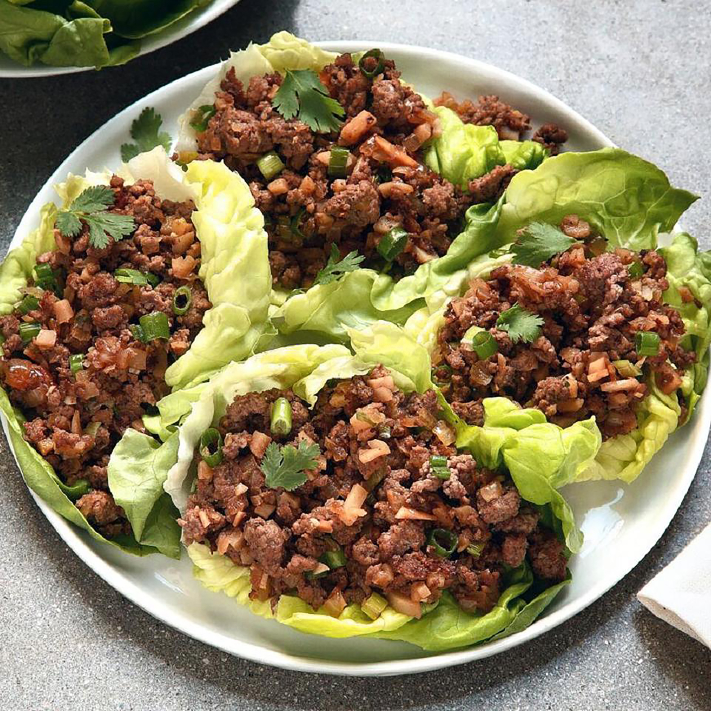

Asian Lettuce Wraps<

Description
Delicious and bursting with flavor, Asian lettuce wraps are a great idea for entertaining or a family style meal. Each person can build their own fresh, delicious wrap. Just be sure to have plates or napkins available since the mixture can sometimes drip a little. To serve, allow each person to spoon a portion of the meat into a lettuce leaf. Wrap the lettuce around the meat like a burrito and enjoy!
Ingredients
- 16 Boston Bibb or butter lettuce leaves
- 1 pound lean ground beef
- 1 tablespoon cooking oil
- 1 large onion, chopped
- ¼ cup hoisin sauce
- 2 cloves fresh garlic, minced
- 1 tablespoon soy sauce
- 1 tablespoon rice wine vinegar
- 2 teaspoons minced pickled ginger
- 1 dash Asian chile pepper sauce, or to taste (Optional)
- 1 (8 ounce) can water chestnuts, drained and finely chopped
- 1 bunch green onions, chopped
- 2 teaspoons Asian (dark) sesame oil
Steps
- Rinse whole lettuce leaves and pat dry, being careful not tear them. Set aside.
- Heat a large skillet over medium-high heat. Cook and stir beef and cooking oil in the hot skillet until browned and crumbly, 5 to 7 minutes. Drain and discard grease; transfer beef to a bowl. Cook and stir onion in the same skillet used for beef until slightly tender, 5 to 10 minutes. Stir hoisin sauce, garlic, soy sauce, vinegar, ginger, and chile pepper sauce into onions. Add water chestnuts, green onions, sesame oil, and cooked beef; cook and stir until the onions just begin to wilt, about 2 minutes.
- Arrange lettuce leaves around the outer edge of a large serving platter and pile meat mixture in the center.
Back to homepage